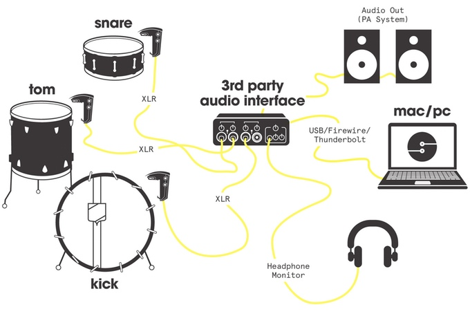

How does it work?
Sensory Percussion uses a combination of sensors to directly capture the vibrations of your entire drum. It is designed to isolate your drum from ambient noise so you can use it on stage and in loud environments. Though it uses multiple sensors, it operates like a traditional phantom-powered mono microphone and uses standard XLR connectors.
Sensory Percussion’s software analyzes the signal from the sensor and can tell where and how you are hitting the drum using our proprietary algorithms, allowing you to map your playing to electronic control. The software supports up to four sensors at a time.
What can it do?
Sensory Percussion doesn’t work like the usual e-drums and triggers. It uses a combination of software and hardware to create an overlay on acoustic drums that turns your kit into an expressive controller for digital sounds. SP does trigger sounds, but it can also do so much more:
1. Assign sounds to different parts of the drum or even different drum strokes. Use the entire surface of the drum–—rim shots, cross-sticks, different parts of the head and rim——for a flexible, fully responsive playing experience.
2. Blend smoothly between multiple sound regions. Play between samples mapped to different regions—the system knows where you’re hitting and can blend between the sounds, erasing the sonic borders common to e-drums and sample pads.
3. Apply effects to different parts of the drum. Map effects to follow your strokes—no more knobs and sliders, no more buttons and pads. You control the effects and parameters in a completely new and intuitive way… by playing the drums.
4. Apply effects controls across multiple drums to achieve higher levels of sound control. Pitch shift the entire kit, control filters to drop the bass... or use reverb and delays to make a full-fledged dub kit.
5. Use smart cross-talk cancellation to maintain high sensitivity in the presence of loud ambient noise (i.e. kick drum vibrating the snare drum).
What are you waiting for?
FAQ
The sensor we designed only fits drums with a metal rim or hoop: basically all the drums in a standard kit (snare, toms, kick). For our first version, we wanted to build something that was going to be secure as well as flexible for kit players. The sensor is unique in that it fits both snares and kick drums. Unfortunately, that means our hardware doesn’t really work on hand drums.
Sensory Percussion needs a standard audio interface to convert the analog audio signal coming from the SP Sensor into a digital signal our software can process. Also, the interface needs to provide 48V phantom power to the SP Sensor. This kind of phantom is a standard feature of audio interfaces with microphone preamps.
We’ve had great success with several USB, Firewire and Thunderbolt interfaces. We’ve used everything from $40 single channel interfaces for very simple single drum setups, to four-channel USB interfaces from PreSonus, Apogee, Focusrite and MOTU. We like the MOTU because it has very handy VU meters on the outside and is reliable and sturdy.
If you have any questions about your specific interface, don’t hesitate to get in touch with us and we’ll do what we can to help. The most important thing to remember regarding interfaces is that it needs to have as many 48v phantom powered XLR input channels as sensors you want to use.
Unfortunately, Sensory Percussion will not support Linux at launch. We support Mac OS X and Windows. We’d love to support as many platforms as possible, but each additional platform greatly increases the development and testing overhead for our small team.
Our software runs as a standalone application on OSX or Windows and will have a fully built out sampler and effects and will support MIDI output.
MIDI out is a core feature of Sensory Percussion. You can send MIDI out over a bus and receive it in any other program (like a DAW) that understands MIDI.
Yes! Surprisingly well, in fact. Mesh heads are great for when you really want to focus on the electronic sounds (or if you have neighbors).
We’re a super young company and are still working on setting up our artist endorsement program. Get in touch if you have any questions, and stay tuned for more info.